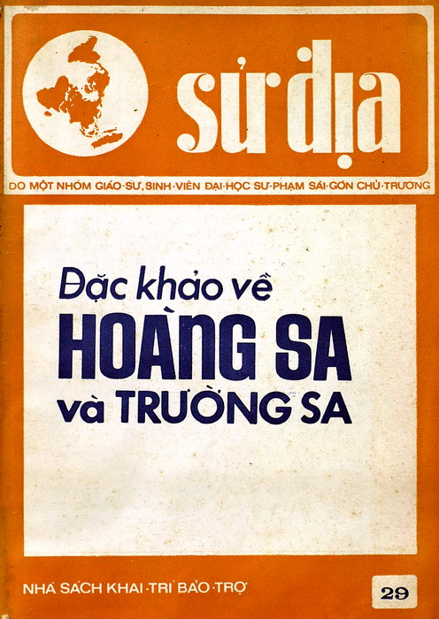

Tập san Sử Địa: Đặc khảo về Hoàng Sa và Trường Sa
Ngày ra mắt: January 19, 1975

Ngày 19-1-1975, tròn một năm ngày quần đảo Hoàng Sa của Việt Nam bị Trung Quốc đánh chiếm, nhóm chủ trương tập san Sử Địa tại Sài Gòn đã tập hợp bài vở, ra mắt số chuyên đề Đặc khảo về Hoàng Sa - Trường Sa, để ghi nhớ sự kiện đau thương còn mãi đến hôm nay, trong đó phải kể đến ý tưởng và vai trò của ông Nguyễn Nhã – chủ nhiệm kiêm chủ bút Sử Địa. Nhiều năm qua chuyên đề Hoàng Sa - Trường Sa trên Sử Địa số 29 (cũng là số cuối cùng của tập san này) đã trở thành nguồn tài liệu quan trọng cho những người nghiên cứu về chủ quyền biển đảo Việt Nam. Nay toàn văn nội dung chuyên đề đặc khảo Hoàng Sa - Trường Sa trên Sử Địa năm nào vừa được Công ty Phương Nam phối hợp với NXB Hội Nhà Văn tái bản với TS Nguyễn Nhã trong vai trò chủ biên. Chuyện cũ còn đó, người xưa còn đây, câu chuyện Hoàng Sa, Trường Sa trong những ngày tháng 1 năm nay quanh việc trở lại của đặc khảo Sử Địa là một tín hiệu tốt, ít ra là từ phía xuất bản. Được chăm chút cẩn thận và in ấn bằng giấy tốt, Đặc khảo về Hoàng Sa - Trường Sa, biển Đông và chủ quyền Hoàng Sa, Trường Sa của Việt Nam sẽ tiếp tục là tập tài liệu bổ ích với các bài viết của những nhà nghiên cứu uy tín: Hoàng Xuân Hãn với bài Quần đảo Hoàng Sa - một trong những bài viết đặt nền móng cho việc khảo cứu về lịch sử Hoàng Sa - Trường Sa từ kho tư liệu cổ sử Việt Nam và cả tài liệu phương Tây; Thái Văn Kiểm với bài Những sử liệu Tây phương minh chứng chủ quyền của Việt Nam và quần đảo Hoàng Sa - Trường Sa từ thời Pháp thuộc đến nay; Lãng Hồ với bài Hoàng Sa và Trường Sa, lãnh thổ Việt Nam, Võ Long Tê khảo về Phương diện địa danh học của hai quần đảo Hoàng Sa và Trường Sa… Có những bài chuyên khảo khoa học cho thấy việc thực thi chủ quyền của Việt Nam là hiển nhiên trong thực tế tại Hoàng Sa trước khi bị Trung Quốc đánh chiếm, như Phúc trình về công tác nghiên cứu phốtphát lần cuối cùng tại quần đảo Hoàng Sa của phái đoàn chuyên viên hỗn hợp Nhật - Việt vào mùa thu năm 1973 (của kỹ sư Trần Hữu Châu); Hoàng Sa dưới mắt nhà địa chất H. Fontaine (của Lạp Chúc Nguyễn Huy)… Đây cũng là một hướng tiếp cận có tính thuyết phục trong công cuộc đấu tranh đòi chủ quyền tại hai quần đảo Hoàng Sa và Trường Sa của Việt Nam. Phần “Thư mục chú giải về Hoàng Sa” của nhóm tác giả Sử Địa cũng được in lại là một tư liệu cần thiết cho những người nghiên cứu tiếp sau.